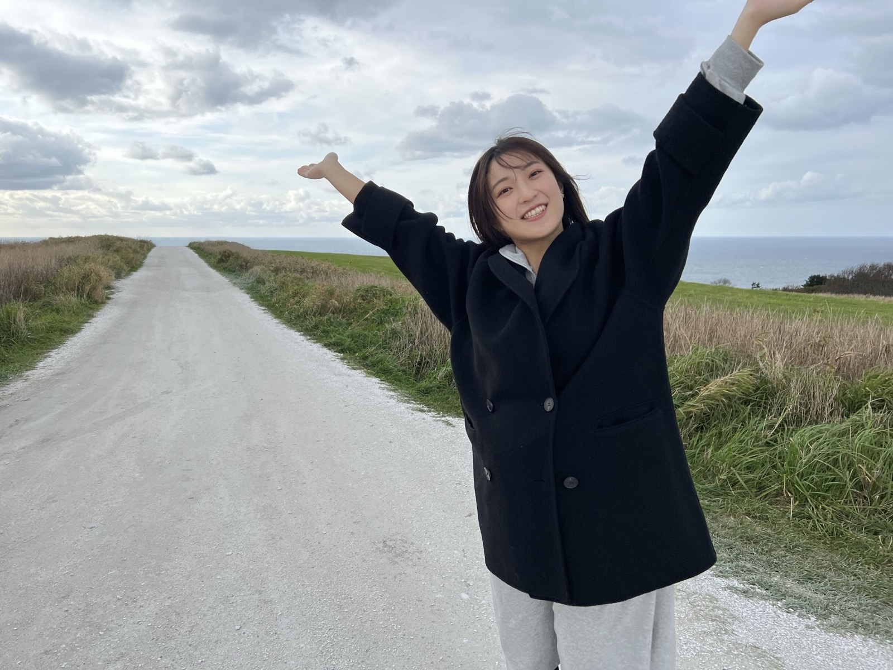
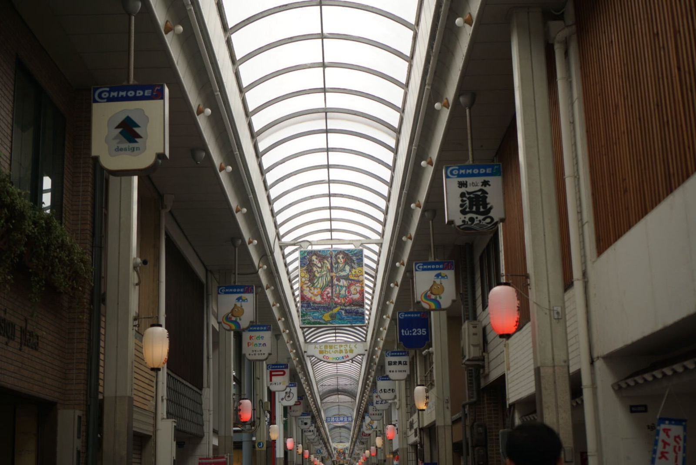
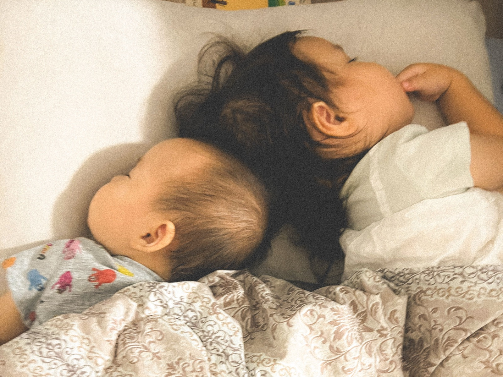
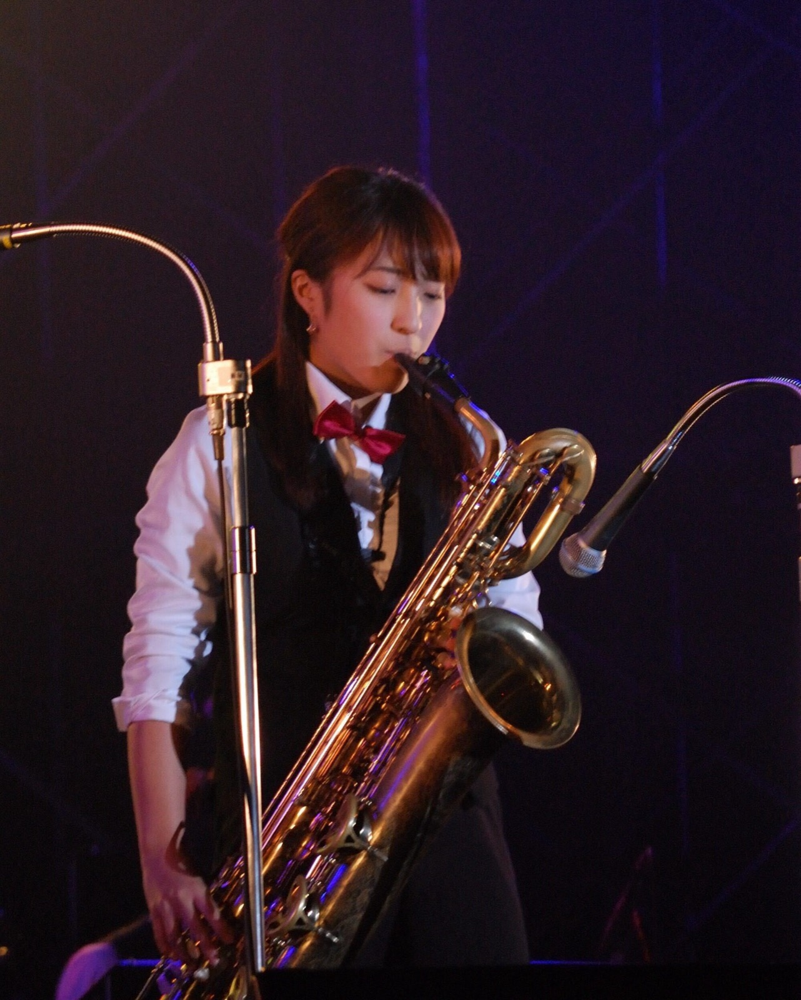
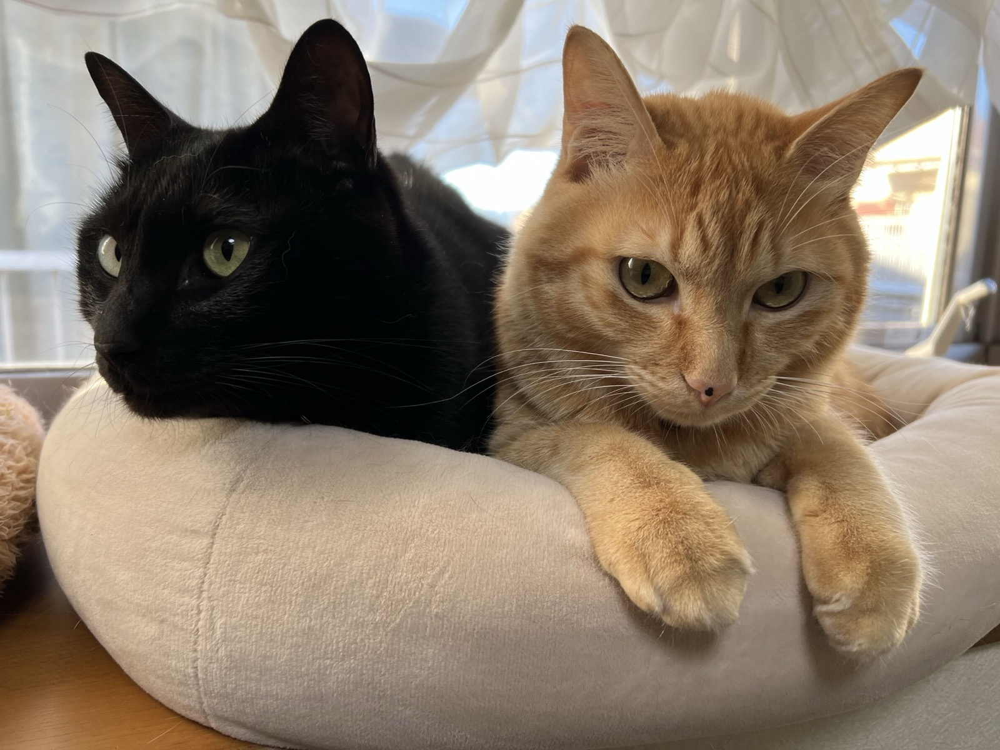

株式会社ライトアップ AIコンサルティング局 第2営業部
第2営業部 リーダー ／ 日本を AIまみれ にする担当

PARTNER SUCCESS
MATSUI YUMI
AIだけでは、
温度感までは届きません。
MY MISSION
祖父が防水工事業の社長で、母がその経理。自営業の家庭で育ちました。受注が読めない月のこと、資金繰りの話、人が採れない話。中小企業の経営が抱える大変さを、外からではなく家の中から見てきました。
就職活動で出会ったのが、ライトアップの「全国、全ての中小企業を黒字にする。」というビジョンです。自分がずっと見てきたものと、まっすぐ重なりました。2019年に新卒入社し、補助金・助成金のコンサルタント、テレアポ部隊の立ち上げ、JSaaSの立ち上げと運営を担当しています。
2年の育休を経て2026年5月に復帰したら、AIは日常に溶け込み、ビジネスで使うことが前提の時代になっていました。大きな変化の渦の真ん中に、いきなり戻ってきた感覚です。いまは何をするときも、まず「これはAIでできないか」から考えます。
担当しているのは、ライトアップのAI SaaSを販売してくださるパートナー様の支援です。毎週1回のお電話、毎月1回のミーティング、そして毎週オンラインで開く新商品の説明会。AIだけで進めると、人の肌感覚や温度感が抜け落ちます。人が入るハイブリッドでなければ、安心して売っていただけません。

商店街と下町の雰囲気が好きです。旅先でも、ついその土地の商店街に行きたくなります。いまは荒川区の下町に住んでいて、顔を覚えてもらい、声をかけてもらいながら子育てをしています。
レトロな商店街をご存じでしたら、ぜひ教えてください。旅先で寄ります。
家族で月に1回は出かけています。海外も好きですし、北海道は一周しました。先日は山梨で桃をたくさん食べてきたところです。運転は夫の担当で、私は助手席で行き先を決める係です。

大学ではビッグバンドジャズをやっていました。担当はサックスです。大勢で音を合わせる面白さを知ったのはここで、いまチームで動くときの感覚にも、どこかつながっている気がします。

黒いほうが「もぐ」で、茶色いほうが「こてつ」です。いまは実家で暮らしています。会いに行くたび、こちらのことは覚えているような、いないような顔で迎えてくれます。
商談で間が空いたときは、このあたりを振ってください。だいたい話が伸びます。
パートナー様が安心して売れる状態をつくるのが、私の役割です。営業力をお持ちの会社と、企画開発力を持つ当社。足し算ではなく掛け算にしたいと考えています。
毎週1回のお電話、毎月1回のミーティング、そして毎週の新商品説明会。AIの進み方は速く、資料をお渡しするだけでは追いつきません。人が定期的に入る形にしています。困ったときに顔の見える相手がいる、という状態を保ちます。
パートナー様に多く選ばれているのは、Lシンク、名刺LINEエージェント、ソーシャルマスター、AIOマスターの4つです。全部を一度にお渡しするのではなく、御社のお客さまに合うものから順にご提案します。
世の中に必要だと判断したAIサービスを、当社はすぐに作ります。ライトアップの強みは機動力です。できたものを毎週の説明会でお伝えし、御社が売れる状態になるまでご一緒します。
営業の会社が開発まで持つのは大変で、開発の会社が営業まで持つのも大変です。足りない側をお互いに補う。足し算ではなく掛け算にして、変化の速いこの時期を一緒に越えていきたいと考えています。
「これ、AIでできますか」の一言からで大丈夫です。できることとできないことを、正直にお伝えします。
株式会社ライトアップ AIコンサルティング局 第2営業部
松井 友美（まっちゃん）